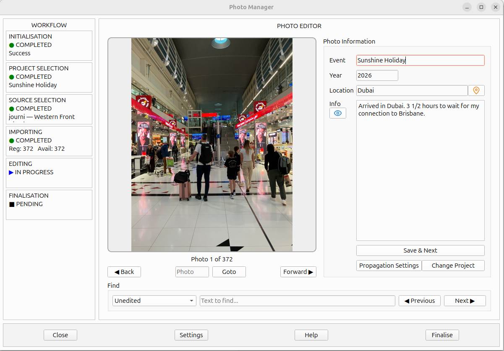

When you select a project, Photo Manager opens it in the Photo Editor. The editor displays one photograph at a time, together with the information associated with that photograph.

The editor is organised into several areas. The workflow stages appear on the left, the current photograph is displayed in the centre, and the Photo Information fields appear on the right. Navigation and search controls are located below the photograph and information fields. Action buttons are in a panel at the bottom of the window.
The following sections explain how to view and edit photo information, move between photographs, and save your changes.
The Photo Details area contains four fields: Event, Year, Location and Info. Together, these fields describe the photograph and contribute to the metadata that Photo Manager saves in the photograph's EXIF UserComment.
When a project is created, the importer supplies initial values for these fields according to its own methods. You can edit any of the fields to correct, add to or change the information as required.
Photo Manager provides two buttons that open external services in your web browser to help you identify information about a photograph.
These browser helpers allow you to investigate a photograph and gather information that can help you complete or correct its Photo Details fields. The information you discover can then be entered into Photo Manager.
The pin icon opens Google Maps and places a pin at the GPS coordinates associated with the photograph, as determined by the importer. This can help you identify the photograph's location when the importer has not been able to determine it successfully by other means.
The button is inactive if the photograph has no associated GPS location.
The eye icon opens Google Images in your web browser and loads the current photograph. You can use this to help identify landmarks, monuments and other objects shown in the photograph.
When you have finished editing the information for a photograph, click Save & Next. Photo Manager saves the information into the photograph's EXIF UserComment and updates the importer's suggested values for the photo.
The Propagation Settings button opens the Propagation Settings editor, where you can control how changes to photo details are applied to other photographs in the project.
To understand how propagation works and how to configure its settings, see Propagation Settings.
Click Change Project to return to the Project Selection screen, where you can select another project to work with.
Any photo details you have saved using Save & Next have already been written to the photograph's EXIF UserComment. You do not need to save them again before changing projects.
You can use the keyboard to move through the Photo Details fields and save your changes without having to click each field with the mouse.
This provides a convenient way to work through a project, entering or revising the details for each photograph and then continuing to the next.
Use the Back and Forward buttons to move to the previous or next photograph in the project. You can also enter a photo number in the field beside Goto and activate Goto to jump directly to that photograph.
These controls navigate between photographs; they do not save changes to the current photograph. Use Save & Next when you want to save your edits and continue to the next photograph.
Goto will not navigate if the number entered is outside the range of photographs in the project. Similarly, trying to move Back from the first photograph or Forward from the last photograph displays an error message. Click OK to dismiss the message.
The Find panel lets you search through a project for photographs that match a particular criterion. You can search backwards or forwards through the project to find the previous or next matching photograph.
Select one of the following criteria:
Use Previous or Next to search in the corresponding direction for a photograph matching the selected criterion. This makes it easier to locate photographs that need attention or to find particular information within a project.